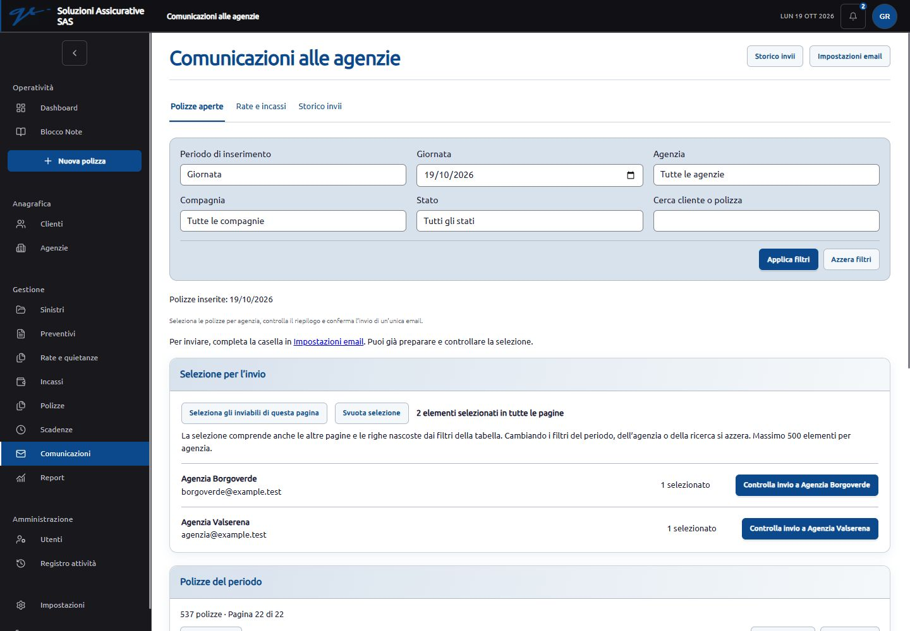

Comunicazioni: paginazione e correzioni tecniche
Verifica del 19 ottobre 2026. Completati i rilievi F09 e F10 dell’audit. Le prove usano un database SQLite separato con dati fittizi: nessuna modifica al database principale e nessuna email reale inviata.
Comportamento aggiornato
- Polizze e incassi nelle comunicazioni vengono caricati in pagine da 25 righe, con ordine stabile e filtri conservati nei collegamenti di paginazione.
- Le selezioni restano memorizzate nella stessa scheda del browser, anche passando dalla prima all’ultima pagina o tornando dal riepilogo. Il conteggio e il pulsante di controllo sono distinti per agenzia. Sono conservati solo gli identificativi, separati per account e tipo di comunicazione; scadenza dopo 30 minuti di inattività e massimo 500 elementi per agenzia.
- Cambiando i filtri principali la selezione si azzera con un messaggio esplicito. I filtri avanzati della tabella conservano invece gli elementi già scelti, compresi quelli momentaneamente nascosti: l’avviso lo chiarisce e il riepilogo precedente all’invio mostra gli elementi effettivi.
- Le righe non inviabili non sono selezionabili. Il server continua a verificare permessi, agenzia, periodo, stato, duplicati e modifiche intervenute prima dell’invio.
- Excel e PDF includono tutti i risultati filtrati, indipendentemente dalla pagina aperta. Anche lo storico utilizza blocchi di esportazione da 500 righe. Il riepilogo della pagina ordinaria viene nascosto quando si applica la paginazione dei filtri avanzati, evitando due conteggi discordanti.
- Conservati tema personale, blu, componenti e pulsanti del gestionale. Tabelle estese scorrevoli nel proprio contenitore su smartphone e tablet.
Prove eseguite
| Controllo | Esito | Evidenza |
|---|---|---|
| Polizze, esportazione dalla seconda pagina | 527 righe e 527 numeri distinti; nessuna perdita al passaggio oltre il blocco da 500. Le date sono celle data Excel. | Excel completo · PDF completo |
| Filtro avanzato per compagnia | 264 righe, tutte della compagnia scelta, anche se inizialmente fuori dalla pagina aperta. | Excel filtrato |
| Incassi, esportazione dalla seconda pagina | 527 righe distinte; importi numerici e date Excel. Riepilogo verificato su due incassi scelti in pagine diverse, con pagamento alla nostra agenzia e pagamento diretto alla compagnia. | Excel incassi |
| Storico, esportazione dalla seconda pagina | 33 comunicazioni esportate, comprese le 25 della prima pagina. | Excel storico |
| 527 identificativi distinti su 41 pagine; prima e ultima pagina renderizzate e controllate visivamente. | Prima pagina · Ultima pagina | |
| Selezioni e filtri nel browser | Prima/seconda/ultima pagina, due agenzie separate, ritorno dal controllo, selezione della pagina, cambio periodo, filtro agenzia e compagnia, filtri avanzati e loro azzeramento. | Desktop |
| Responsive | Comunicazioni a 390 px, riepilogo su smartphone, storico a 360 px, incassi a 768 px, comunicazioni a 1440 px. Nessuno sbordamento della pagina nelle viste controllate. | Filtri smartphone · Selezione smartphone · Storico · Tablet |
| Regressioni automatiche | 58 test PHP e 692 asserzioni superati su paginazione, comunicazioni, incassi, permessi e precedenti difetti di sicurezza. 11 test JavaScript superati su selezioni, esportazione, date, importi e protezione dalle formule. | Database in memoria; trasporto email simulato. |


Dipendenze e compilazione
Rimossi i pacchetti Tailwind e la configurazione non utilizzati dagli stili esistenti. La dipendenza UUID di ExcelJS è fissata alla versione 11.1.1; la libreria del browser viene ricompilata dai sorgenti, così l’aggiornamento raggiunge anche il file effettivamente usato per esportare. La compilazione usa soltanto le funzioni di compatibilità necessarie, mantenendo hashing e generazione casuale sicura.
Il test della libreria ricompilata comprende un ambiente senza le variabili globali di Node, la scrittura e rilettura del file, identificativi per formattazione condizionale e confronto dell’hash della protezione foglio con l’implementazione nativa.
Audit npm finale: zero vulnerabilità note segnalate. Risultato completo. Compilazione completata. Rimane l’avviso di dimensione del modulo Excel: circa 604 kB minificati, 163 kB compressi, caricato su richiesta quando si esporta. Il risultato dell’audit delle dipendenze non certifica l’assenza di vulnerabilità dell’intero gestionale.
Limiti e attività ancora aperte
F06 resta aperto per i testi pubblici privacy/condizioni e i contenuti approvati dal cliente. La casella SMTP reale e la consegna effettiva alle agenzie richiedono configurazione e collaudo sul servizio definitivo. Scheduler, API delle compagnie e decisioni sulla maturazione delle provvigioni rimangono attività distinte da questo intervento.
Questa verifica copre le pagine e i casi indicati; non è una prova di carico concorrente sul futuro server MySQL/MariaDB. Il browser di collaudo è stato chiuso.

Prova su smartphone
Audit originario · Verifica precedente dell’uniformità grafica